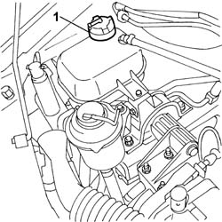

1088A10 Engine COOLANT - Check density' and top up level, if necessary
- Path
- Procedures > 10 ENGINE > 1088 ENGINE COOLING > 1088A miscellaneous - engine cooling checks > 1088A10 Engine COOLANT - Check density' and top up level, if necessary
- Kind
- repair procedure (removal / refitting; the operation number is the code)
- Applies to
- all engines; all production periods
- Interactive page
- https://sloeber94.github.io/elrnDB-fDbl/en/#/2584295
Applies to: all engines; all production periods
Applies to: all engines; all production periods
 Removing
Removing
 Refitting
RefittingCheck that the coolant level is between the MIN and MAX marks on the expansion tank.
1. If necessary, top up the level by unscrewing the cap and adding engine coolant
 | Type | Component | Name | Qty. |
|---|---|---|---|---|
- | Fluid [l] | ENGINE COOLING CIRCUIT | PARAFLU | - |

Applies to: all engines; all production periods
Applies to: all engines; all production periods
Refitting
RemovingFit the cap.
Start the vehicle and leave the engine to idle for a few minutes.
Turn off the engine and wait for a few minutes.
Recheck that the engine coolant level lies between the MIN and MAX notches on the expansion tank.